If you are coming up with solutions on how to monetize your website, these free…
A Beginner’s Guide to Essential (Free) WordPress Plugins
2. A Beginner’s Guide to Essential (Free) WordPress Plugins
WordPress plugins have a number of different purposes. WordPress is an easy-to-use, reasonably powerful content management system (CMS). A CMS is designed to act as a platform for every type of website, so it has to be a bit general in its approach. Assuming that you can code and add functions to your WordPress database, it still would be quite the hassle. Plugins have been created to solve this particular issue.
While plugins are not tailor-made for a particular website, there are many that cater to specific functions and prove useful to all WordPress websites irrespective of the business niche or the site type. Apart from that, there are niche-specific plugins as well.
Below are plugins that a WordPress site cannot do without.
What functions do must-have plugins cater to?
- security
- running site backups
- search engine optimization (SEO)
- social media sharing
- site caching (WordPress performance optimization)
- contact forms
- handling spam comments
Security Plugins
Wordfence
Wordfence is an efficient website guard dog. It comes with a firewall, login security measures, and auto-scheduled scanning options. A cloud-powered system, the plugin scans your website (WP database and files) for changes, malicious scripts, or viruses.
The plugin also helps keep your website off Google’s blacklist (GSB). It does so by scanning your entire website for links you may have included, which are part of the GSB or which may then cause your site to land up on the GSB.
The plugin has a basic options panel that can be used by all and an advanced options panel that allows for fine-tuning of plugin performance. This plugin promptly informs you when someone is trying to access your site when they shouldn’t be able to via email updates. The scanning options are pretty impressive and allow you to check your WP out thoroughly. With the firewall, you can throttle site requests if something seems suspicious. This is useful if you ever have to fend off a distributed denial-of-service (DDoS) attack or brute force (automated password guessing) attacks.
Monitoring live traffic is a breeze despite the fact that it is pretty redundant unless you are on the lookout for something specific in your website’s traffic.
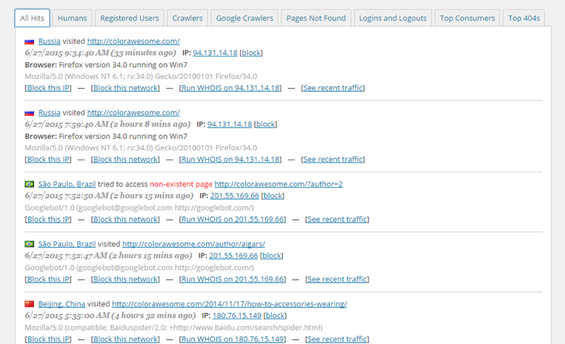
You can block certain countries from accessing your website if you want, too, although I have no clue why someone would do something like that. Apart from the above, you can block IPs and ranges of IP addresses, as well as enable cellphone sign-ins and caching.
More info / DownloadThe premium version of the plugin offers even more in the way of security options.
Jetpack
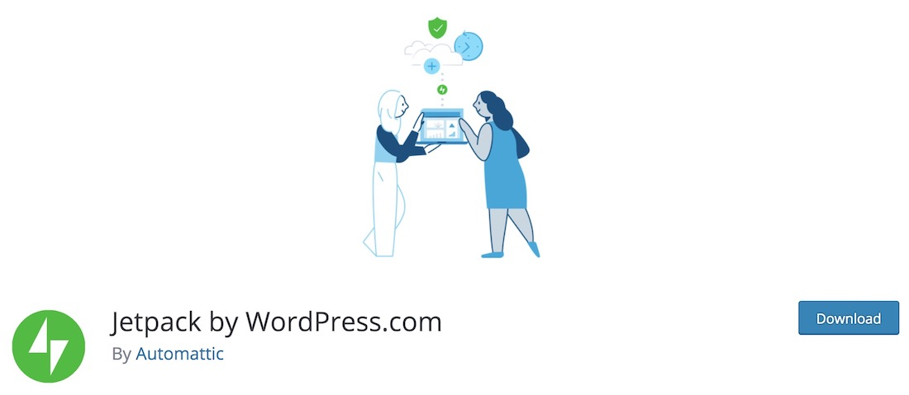
Jetpack is an essential free WordPress plugin that helps you take care of your website’s protection. Instead of constantly worrying about the attacks and whatnot, be safe and secure with Jetpack. Also, the plugin’s basic protection is always entirely free of charge. With the simple installation, activation and setup process, it will take you little to no time to add a solid layer of protection and security to your site or blog. The tool operates 24/7 in the background, while you focus on growing your business, publishing new content and bringing in as much traffic as possible. Take charge and never bother about brute force attacks.
Alternate security plugins:
These two plugins recommended as alternatives are not inferior to Wordfence. Check them out if you have the time, and pick the one that you feel has the better UI and is comfortable to use.
All In One WP Security & Firewall
All In One WP Security & Firewall is an essential free WordPress plugin that keeps your online space even more secure than it already is. With this simple to use tool, you can easily boost the security and stability of your WordPress blog or website without breaking a single drop of sweat. The plugin utilizes all the latest WordPress protection practices to make sure your page runs smoothly at all times.
The rules that you can set for your website categorize as basic, intermediate and advanced. You can pick accordingly or go from the lowest to the highest security protocol. Needless to say, when using All In One WP Security & Firewall plugin, you will not experience any slowing down of your website. Some additional features of the tool are password strength tool, stop user enumeration and monitoring account activity to name a few.
More info / DownloadWordPress Backups
Site backups are crucial. If you run a revenue-generating website or if you intend to make your site into one in the near future, then know that time is money. If ever your site goes down for some reason, you’ll need to get it back up immediately. Every second your site remains offline, you lose revenue. It needs to be backed up on a regular basis with easy restoration options.
Here’s one more thing about backups you ought to know. If your host provider offers backup options, find out if their backup servers are separate from their normal servers. If not, then by putting the backup and your site on the servers in the same physical location, it makes your site vulnerable to any physical catastrophe that may cause harm to your host’s servers. We need the backup in location and on a server entirely independent of your host’s servers.
UpdraftPlus

With UpdraftPlus, you can save a copy of your WP and all its contents on a number of different locations:
- Amazon S3
- Dropbox
- Google Drive
- Rackspace Cloud
- FTP & SFTP
The list goes on.
You can select the backup interval according to your needs. It is best to back up your site at least once a day. The plugin permits only one backup location for the free version of the plugin. If you’d like to back up your site to more than one location, you’ll need to add the premium version, which costs $20.
UpdraftPlus helps back up your plugins, themes, uploads, and other content. You can also run a WP database backup alternately at a different interval from your normal backup. Restoration of both files and database are easy and, in most cases, seamless.
More info / DownloadBackWPup
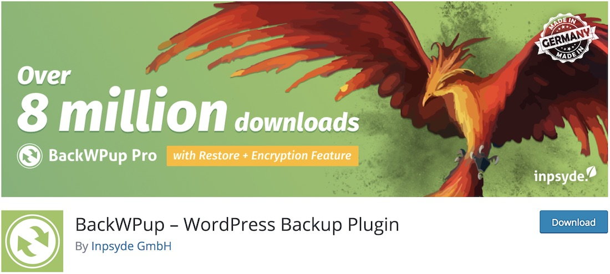
As the name suggests, BackWPup is an essential free WordPress plugin for performing backups. As simple as that. With BackWPup, you can save the complete installation to a 3rd-party service like Dropbox, Microsoft Azure, SugarSync or your own FTP server. It gives you a single .zip file which you can later use to restore a backup quickly and effectively. Every so often, it is highly advisable to create a backup especially if you have some hot content going on on your WordPress page that you do not want to lose if something goes wrong. Better be safe than sorry.
To get the gist of it, BackWPup comes with a quick introduction video which will familiarize you with the plugin. Of course, the whole installation and activation process is both fast and straightforward.
More info / DownloadSearch Engine Optimization
We receive a healthy chunk of our traffic from Google, so make sure that Google is your ally. A few simple tricks enabled by a plugin will help your site with SEO. Your site will not suffer in any way due to poor search engine optimization.
WordPress SEO
WordPress SEO is a great tool for search engine optimization. We use the same on ColorLib.
It helps with a great number of seemingly small yet cumulatively rather important things.
The plugin helps ensure that the titles, meta data, permalinks, breadcrumbs, RSS feed, your site’s social accounts, homepage, taxonomies, and archives are in order. You can create an XML sitemap, which is basically a blueprint for your website. This is made available for a search engine’s crawler to pick up. WordPress SEO prevents the site from encountering any content duplication problems from within your own site. It helps calculate the search engine optimization of each post you publish prior to publication. Yoast’s plugin helps shows a snippet preview of how your post turns up on a search.
Add an SEO keyword, a title, and a meta description. In the page analysis at the bottom of your page/post editor, you can view the keyword density, the minimum word count recommendation, the ease of content readability, the number of outbound links, and the social aspects of your content as well.
More info / DownloadSEO is not the same for all sites. The process can be altered differently for commerce sites, sites that employ geolocation to target local customers, and sites that specialize in video content and even news. Yoast’s premium offerings cater to all these SEO requirements as well.
Social Media Sharing
Making your content worthy of merit is good. Now, we need to get the word out! Social sharing plugins make it possible for your readers to share your content.
The prime focus of a social sharing plugin in my opinion needs to be accessibility. Assuming someone wants to share your content, you should make the process as easy as can be. Then, you need to ensure that social media buttons do not clutter and overcrowd your website.
Simple Share Buttons Adder
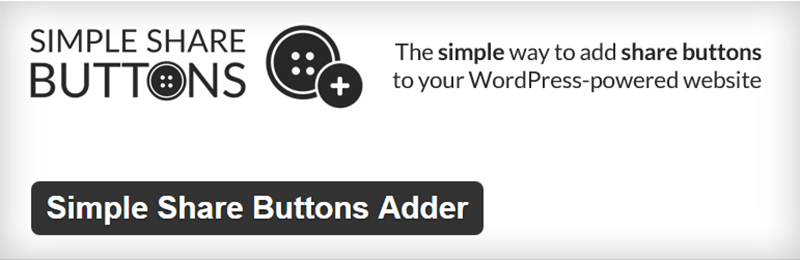
Simple as the name might suggest and highly effective, easy to use social sharing plugin for WordPress. The social sharing buttons can be displayed on any page or post, in the categories, archives, excerpts and the home page. The social sharing options can be placed below or above your content. And you can add it to the sidebars and footers with a text widget and a shortcode that the plugin provides.
More info / DownloadCheck out the premium version here.
Social Media Share Buttons & Social Sharing Icons
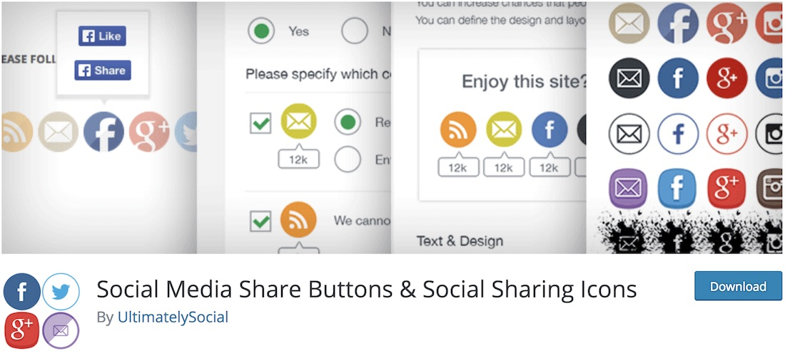
You have all this content on your page, but you feel like it deserves more shine – what to do? After you fully optimize it for search engines, one of the best approaches is to keep sharing it on social media platforms. Instead of doing it manually, you and your users can now push it instantly thanks to the Social Media Sharing WordPress plugin. There are very many different options and features that Social Media Sharing has in store for you, making sure you spread the word out successfully.
In the kit, you get sixteen stunning designs of social sharing buttons. You can also give a bunch of different actions to each social sharing icons, like sharing only, redirecting visitors to your social platform or even let them follow and like your accounts. You can also animate buttons and make them float or stick to your web design. Get Social Media Sharing plugin and witness the increase in your content distribution.
More info / DownloadBlog2Social
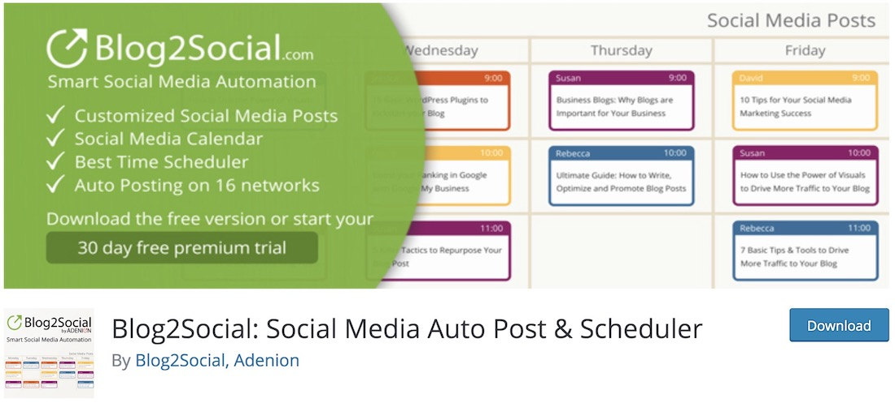
While you might already be super bussy with content creation, you find lacking time to distribute your masterpieces across your social media networks. Luckily, Blog2Social is a handy free WordPress plugin that does all the hard work for you. Instead of posting on Facebook, Twitter, Instagram, Pinterest and other platforms manually, let Blog2Social do it for you. It supports fourteen different networks.
Other features of the plugin include social media post customization, a function to republish old posts and save social posts as drafts. Blog2Social also automatically adds hashtags that it picks up from your original post’s tags. What’s more, you can edit and adjust meta tag information of your blog posts and pages. The plugin also comes with an extension for Chrome and Firefox, allowing you to save links while browsing the web.
More info / DownloadOther social sharing plugins worthy of note,
- Social Media Feather – Lightweight plugin with good social media icons.
- Social Sharing By Danny – Minimal plugin with no bloat whatsoever, probably the fastest among the lot.
Site Caching: WordPress Performance Optimization
WordPress is dynamic. Every time someone visits your site, requests go to a database that holds your content. Accessing data from a database is time-consuming and loads your servers. You can reduce both the load time and the server load by using a caching plugin.
A caching plugin essentially transforms your dynamic site into a static one. And this in effect, makes your site faster. When a caching plugin is fully operational, it does significantly affect your site’s performance.
Your site’s performance is crucial to a good visitor experience. Slow websites make for terrible user experiences. Apart from that, your site’s performance is factored into search algorithms, and they reward speed.
WP Super Cache
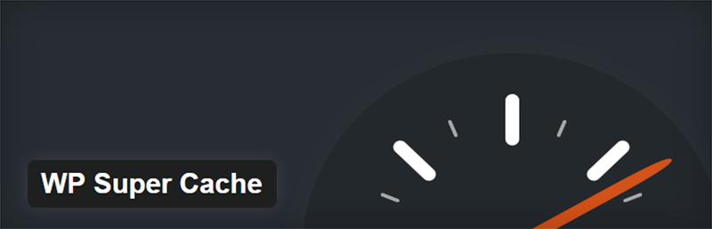
I like this plugin a lot, it caters to the needs of the tech savvy and those who aren’t as comfortable with WordPress. But it certainly does not sacrifice performance.
It produces supercached files (served by PHP) which is one of the fastest caching methods you could hope to use.
Caching files involves creating a new copy of the same files and too many files can end up having an effect opposite to speeding up your site. The plugin also regularly deletes the redundant copies of your site’s files.
For many more options with caching plugins and a review in greater depth about them, read our detailed WordPress caching plugin guide.
More info / DownloadContact Forms
A contact form is means of communication between the web admin and the reader or a potential investor or new business partner. Whilst people now tend to use Twitter and the other social media networks to get in touch, contact forms are still a very integral part of a website. It is especially important for business-oriented, revenue-generating websites.
Contact Form 7
A simple way to add Contact Forms. This plugin supports CAPTCHA and Akismet spam filtering, so your mailbox isn’t flood with spam. There is nothing much more to the plugin, it just functions and that’s all you’ll need to start out. And with this contact form people will be able to get in touch with you.
We use Contact Form 7 on Colorlib as well and a sample contact form can be found here. On top of basic contact form functionality we have file upload option that helps users to attach translation files, screenshots, documents and any other files that they might want to send.
More info / DownloadContact Form by WPForms
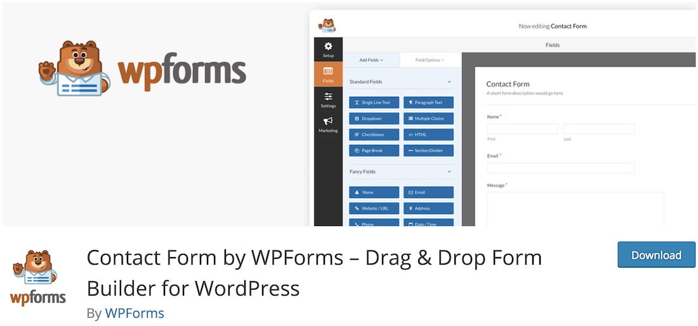
When it comes to building a fully functional contact form, you can implement it into your website with a simple plugin. WPForms is the essential free WordPress plugin that does the trick swiftly. It has the drag and drop technology integrated into its interface to make sure everyone can create the right contact form for their online presence. No need to know how to code! There are also several predefined templates available and ready for you to take them to your advantage.
In a few simple steps, you can install, activate and create the contact form of choice. In addition to that, whenever you find in need of more features and functions, you can always upgrade to WPForms’ premium plan and unlock a whole new horizon of possibilities. However, feel free to use the free version for as long (read forever) if you wish.
More info / DownloadSpam Handling
You’ll probably have a hundred spam comments before you actually have a meaningful comment on your website. Spam affects your site’s credibility and is a nuisance, so you must deal with it.
The problem with dealing with spam manually is the shear volume. You receive a hundred comments, could you sift through them all sorting spam from genuine comments ? Not without wasting a great deal of time and effort.
Akismet
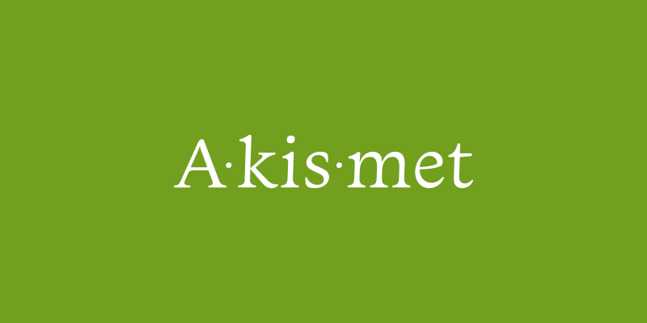
Akismet is a great plugin that protects your site from spam. You can get it for free unless you receive in excess of 50,000 comments a month. Automattic, the team behind WordPress, developed this unofficial spam defender for all WordPress sites.
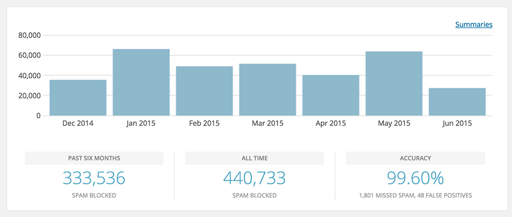
You need to get an API key from Akismet. Enter the same API key into the Akismet plugin. The plugin scans and filters the comments, as well as blocks the ones detected as spam. The web admin can approve the filtered comments.
More info / DownloadClassic Editor
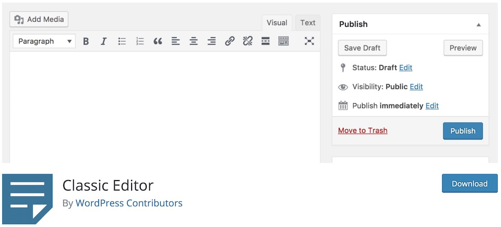
With millions upon millions of installs, Classic Editor proves that many still prefer the old-school way of content creation in WordPress. The new Gutenberg block builder now comes as default with each new WordPress install, however, if you prefer using the classic editor way more, this is the plugin that does the trick pretty much instantaneously. You simply install and activate the plugin and that’s it!
What’s more, Classic Editor also allows admins to set Classic Editor for every user or even enable them to pick between new and old versions. Moreover, each post also opens the editor that was used for creating the content. Meaning, even if you have set Classic Editor, but the author used Gutenberg, you will still get Gutenberg to continue with the work.
More info / DownloadFinal Thoughts
I feel all the above plugins and the purposes they serve are necessary for every WordPress site out there. So if you are creating first WordPress site, I highly recommend you use a plugin for every specific function I’ve mentioned at the start of this article.
You can use the plugins mentioned here or search for alternate options, but the plugins mentioned here are the bare minimum any site needs.
If you need any help, drop a comment below. Either Aigars or I will be happy to assist you in any way we can!
Looking for the best WordPress theme?
 Get it now!
Get it now!![]()